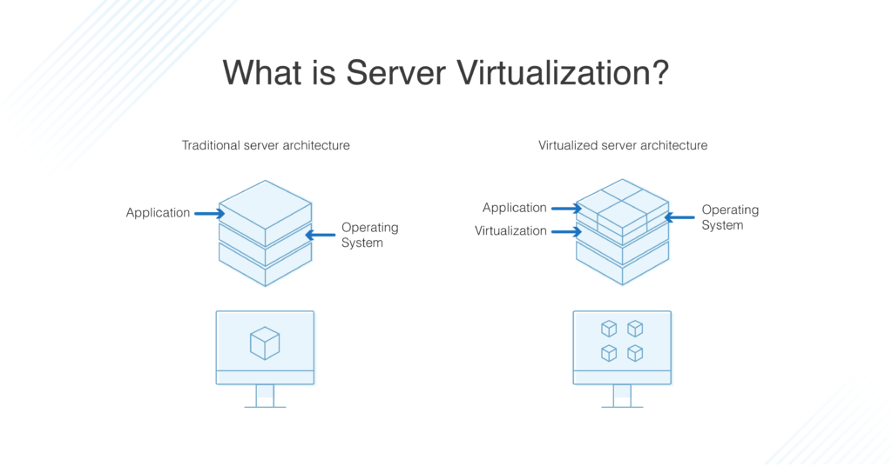
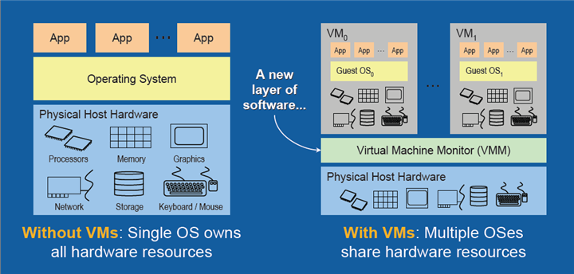

Virtualization is the creation of a virtual -- rather than actual -- version of something, such as an operating system (OS), a server, a storage device or network resources. Virtualization uses software that simulates hardware functionality in order to create a virtual system. This practice allows IT organizations to operate multiple operating systems, more than one virtual system and various applications on a single server. The benefits of virtualization include greater efficiencies and economies of scale. OS virtualization is the use of software to allow a piece of hardware to run multiple operating system images at the same time. The technology got its start on mainframes decades ago, allowing administrators to avoid wasting expensive processing power.
Virtualization describes a technology in which an application, guest operating system (guest OS) or data storage is abstracted away from the true underlying hardware or software. A key use of virtualization technology is server virtualization, which uses a software layer -- called a hypervisor -- to emulate the underlying hardware. This often includes the CPU's memory, input/output (I/O) and network traffic. Hypervisors take the physical resources and separate them so they can be utilized by the virtual environment. They are able to sit on top of an OS or they can be directly installed onto the hardware. The latter is how most enterprises virtualize their systems.
